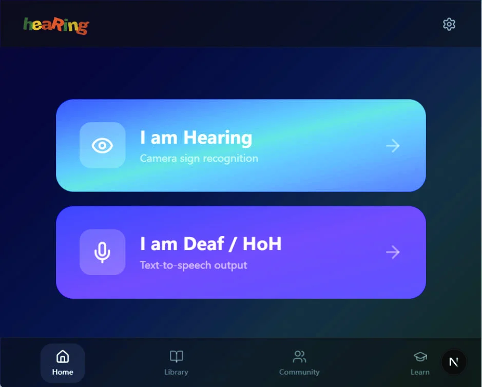
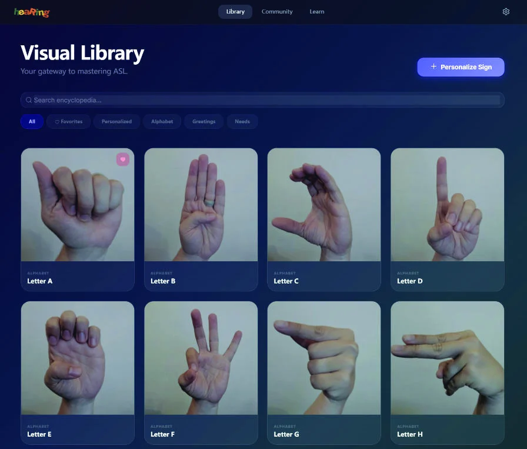
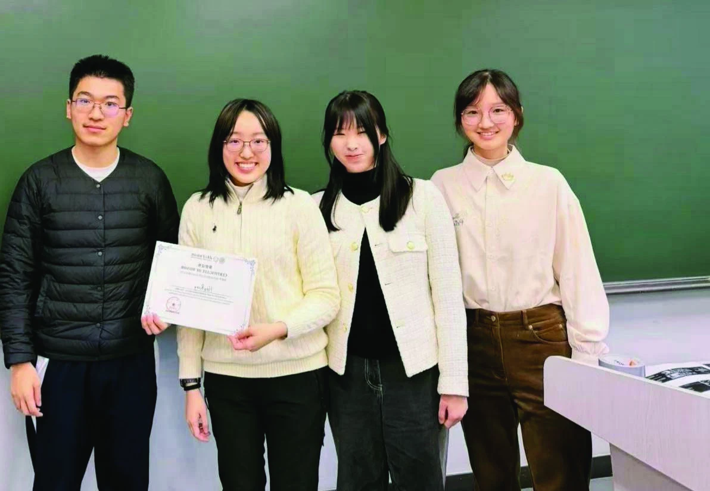

让对话直接发生
探索手语到文字、语音的转换，让面对面的交流多一种可能。
CONNECTION / 沟通A SMALL DEVICE. A BIG CONVERSATION.
言戒：为你发声的承诺。
用手语识别与轻量可穿戴交互，
让表达越过声音的边界。

手语是完整的语言。我们希望借助技术，让使用不同语言、不同沟通方式的人，在日常生活中更自然地理解彼此。
探索手语到文字、语音的转换，让面对面的交流多一种可能。
CONNECTION / 沟通从摄像头与手机原型出发，探索轻量穿戴形式，减少使用负担。
WEARABILITY / 轻量以关键点表示替代完整图像作为识别输入，探索本地处理与可控的数据使用。
PRIVACY / 尊重以鼻尖为原点、肩距为尺度，将关键点转换到身体局部坐标系，减少图像平移与等比例缩放带来的变化。
移动滑块查看尺度归一化。此处使用示意骨架；归一化不直接消除遮挡或大幅三维视角变化。
在分类模型之前进行几何预处理。鼻尖提供位置参考，肩距提供尺度参考。
MediaPipe Holistic 提取 258 维特征；手部子流保留 42 个关键点、126 维表示。
采样为 30 帧序列，由 Transformer 编码动作。手部增强实验进一步探索噪声与缺失的影响。
选择一个场景，体验文字展示与语音播放的交互构想。示例句子为预设内容，这里不运行摄像头或手语识别模型。
我想表达 / I WANT TO SAY
你好，很高兴认识你。
Hello, nice to meet you.
语音由浏览器合成。无需上传个人数据。
项目 APP 原型探索双角色入口、手语视觉词库与语音输出，让表达与学习发生在同一个界面。


在论文所述的 CNSL-full 子集实验中，同一 3 层 Transformer 加入头锚预处理后，Top-1 从 50.26% 提升至 70.94%。
头锚模型 / 3 层 Transformer
头锚模型 / CNSL-full 子集
Top-1 提升 / 论文所述设置
论文与当前 v2 模型分别展示。
| 模型 / 配置 | 类别 | Top-1 | Top-5 |
|---|---|---|---|
| 原始关键点 · 3 层 Transformer | 5,794 | 50.26% | 74.20% |
| ＋头锚归一化 · 同一架构 | 5,794 | 70.94% | 89.16% |
| 手部子流＋鲁棒增强 · 12 层 Transformer | 5,766 | 69.93% | 87.98% |
来源：所提供论文 Table 1 与 CNSL-5s 实验；头锚数值与 v2 training_summary.json 一致。第三行使用不同子集与模型容量。
如何理解这些结果这些是历史按片段划分的实验记录，不能据此宣称已解决跨用户、跨设备泛化。论文中的类别子集与完整 NationalCSL-DP 不同；网站未重新运行训练或独立复现实验。
现阶段聚焦孤立手语识别与交互原型。连续手语、可靠的第一人称识别和真实场景部署，是我们继续探索的方向。
头锚预处理、Transformer 训练代码、历史模型记录及 APP 界面原型。
明确数据来源与划分，开展独立用户、设备和视角条件下的验证。
连续手语与语境建模、第一人称采集、穿戴传感器及用户共创。

STUDENT-LED. HUMAN-CENTERED.06 / THE PEOPLE BEHIND HEARING
我们是来自清华大学紫荆书院的 HeaRing 学生团队。从算法研究、数据处理到硬件与 APP 原型，我们希望把无障碍沟通的想法，变成可以被看见、被体验的作品。
项目研究稿署名：Holly Natasha Sutantio、Mo Han Li、Sarah Si Yu Tan。完整作者信息请见论文首页。
联系团队 ↗阅读研究、了解作品，或与我们讨论
手语识别与无障碍沟通的下一种可能。